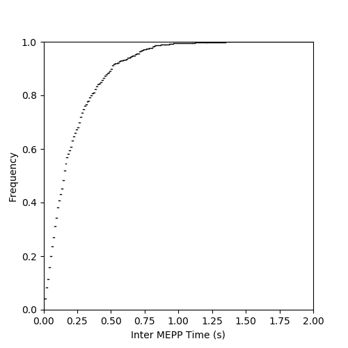
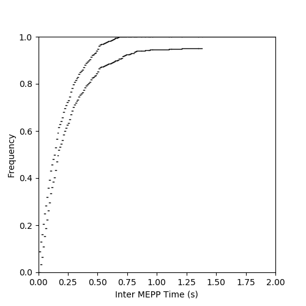
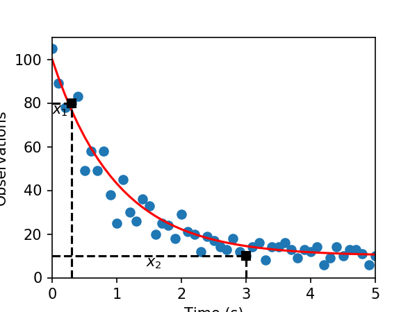
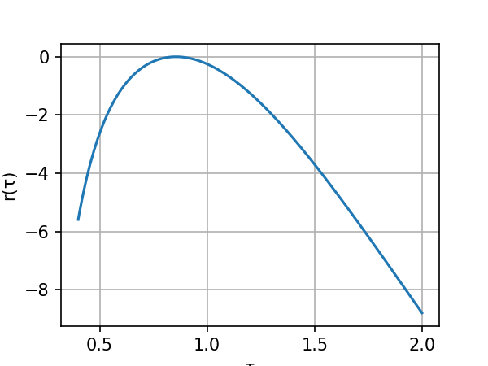
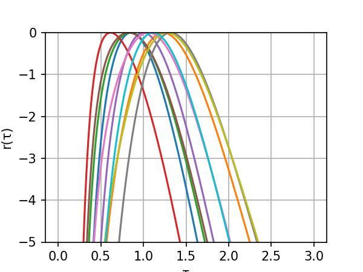
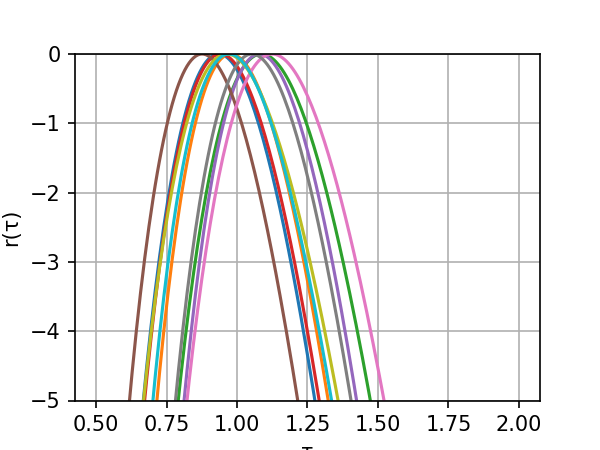
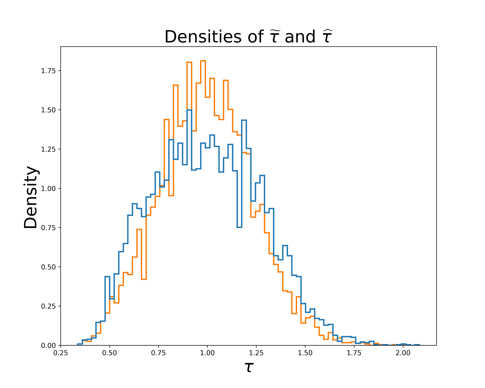
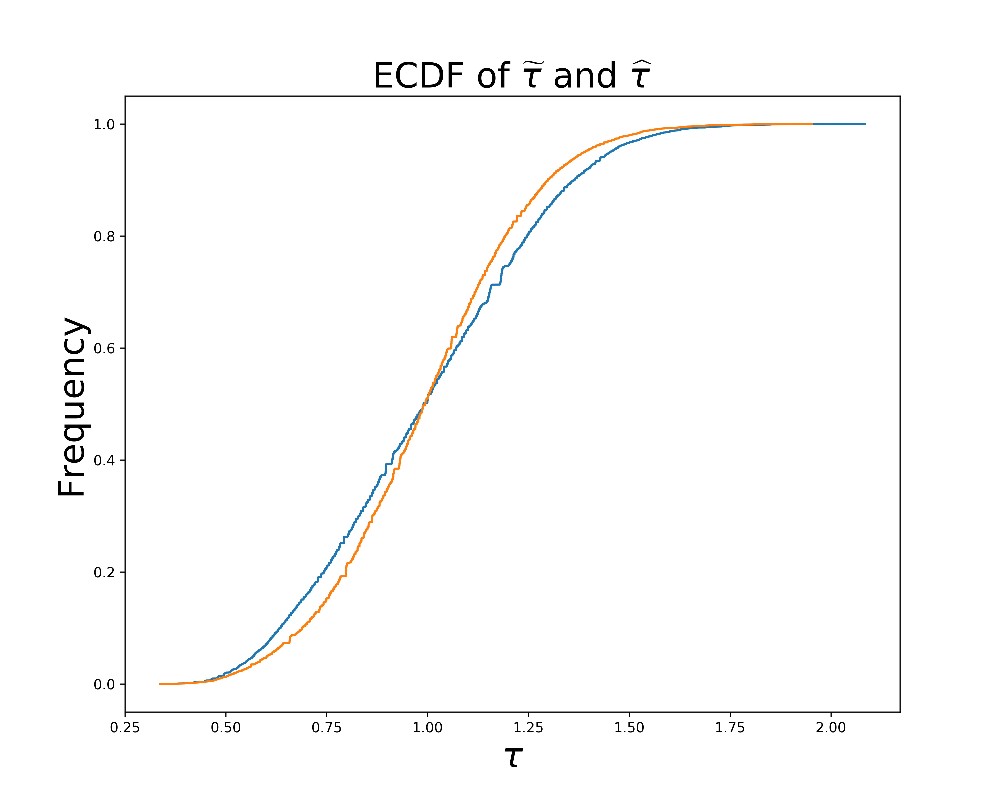

A glimpse of the Statistician's toolbox: Tutorial
Table of Contents
1 The ECDF
1.1 Getting Fatt and Katz data
To keep things "organized" I create a sub-directory that I call data before downloading the dataset there:
mkdir data
cd data
wget http://www.stat.cmu.edu/~larry/all-of-nonpar/=data/nerve.dat
It then a good idea to check that there is no obvious corruption (looking at the first 10 lines with program head):
head data/nerve.dat
0.21 0.03 0.05 0.11 0.59 0.06 0.18 0.55 0.37 0.09 0.14 0.19 0.02 0.14 0.09 0.05 0.15 0.23 0.15 0.08 0.24 0.16 0.06 0.11 0.15 0.09 0.03 0.21 0.02 0.14 0.24 0.29 0.16 0.07 0.07 0.04 0.02 0.15 0.12 0.26 0.15 0.33 0.06 0.51 0.11 0.28 0.36 0.14 0.55 0.28 0.04 0.01 0.94 0.73 0.05 0.07 0.11 0.38 0.21 0.49
The data are organized on 6 columns, the times (intervals between successive mEPPs, read from left to right and from top to bottom) are given in seconds. The number of lines in the file is:
wc -l data/nerve.dat
134 data/nerve.dat
We also check the end of the file with program tail:
tail data/nerve.dat
0.07 0.19 0.11 0.10 0.17 0.24 0.01 0.13 0.21 0.03 0.39 0.01 0.27 0.19 0.02 0.21 0.04 0.10 0.06 0.48 0.12 0.15 0.12 0.52 0.48 0.29 0.57 0.22 0.01 0.44 0.05 0.49 0.10 0.19 0.44 0.02 0.72 0.09 0.04 0.02 0.02 0.06 0.22 0.53 0.18 0.10 0.10 0.03 0.08 0.15 0.05 0.13 0.02 0.10 0.51
We therefore see that we have 133 lines with 6 numbers (making 798 measurements) and on line, the last, with a single number, making a total of 799 measurements.
1.2 Starting Python
I'm assuming from now that Python was started from the directory "above" data.
We are going to use numpy and many features of the pylab submodule of matplotlib so we start by importing them:
import numpy as np import matplotlib.pylab as plt
To get interactive figures, type:
plt.ion()
1.3 Loading the data in Python
The data are tab separated. We will therefore read each line one after the other and split it based on the tabs.
mepp = [] for line in open("data/nerve.dat"): elt = line.split('\t') if elt[1] != '': # test if lines contains more than 1 element mepp += [float(x) for x in line.split('\t')] else: mepp += [float(elt[0])]
1.4 Five numbers summary and median
A somewhat crude way of getting the five-numbers summary of the data is to use function percentile from numpy:
[np.round(np.percentile(mepp,q),2) for q in np.linspace(0,100,5)]
[0.01, 0.07, 0.15, 0.3, 1.38]
Since numpy doesn not have a MAD function we compute it from the formula:
mepp_median = np.median(mepp) np.median(np.abs(mepp-mepp_median))/0.67449
0.14826016694094796
1.5 Definition of an ECDF graph generating function
We now define function plot_ecdf:
def plot_ecdf(x, domain = None, color='black', lw=1): """Generate a graph of the ECDF of x Parameters ---------- x: a list containing the sample domain: a two elements list specifying the range of the abscissa color: the color used for the graph lw: the line width for the graph Returns ------- Nothing, the function is used for its side effect, a graph is generated on the current device. """ from math import floor,ceil from numpy import sort, arange import matplotlib.pylab as plt X = sort(x) n = len(x) Y = arange(1,n+1)/float(n) if domain is None: domain = [floor(X[0]),ceil(X[n-1])] for i in range(n-1): plt.plot(X[i:(i+2)],[Y[i],Y[i]],color=color,lw=lw) plt.xlim(domain) plt.ylim([0,1]) plt.hlines(0,domain[0],X[0],colors=color,lw=lw) plt.hlines(1,X[n-1],domain[1],colors=color,lw=lw)
1.5.1 Use of the function
plot_ecdf(mepp) plt.xlabel("Inter MEPP Time (s)") plt.ylabel("Frequency")

1.6 Definition of an ECDF band generating function
def plot_ecdf_band(x, alpha = 0.95, domain = None, color='black', lw=1): """Generate a graph of the ECDF of x Parameters ---------- x: a list containing the sample alpha: the probability to have the complete true CDF within the band domain: a two elements list specifying the range of the abscissa color: the color used for the graph lw: the line width for the graph Returns ------- Nothing, the function is used for its side effect, a graph is generated on the current device. """ from math import floor,ceil,sqrt,log from numpy import sort, arange, clip import matplotlib.pylab as plt X = sort(x) n = len(x) Y = arange(1,n+1)/float(n) epsilon = sqrt(log(2/(1-alpha))/2/n) U = clip(Y+epsilon,0,1) L = clip(Y-epsilon,0,1) if domain is None: domain = [floor(X[0]),ceil(X[n-1])] for i in range(n-1): plt.plot(X[i:(i+2)],[U[i],U[i]],color=color,lw=lw) plt.plot(X[i:(i+2)],[L[i],L[i]],color=color,lw=lw) plt.xlim(domain) plt.ylim([0,1]) plt.hlines(0,domain[0],X[0],colors=color,lw=lw) plt.hlines(1,X[n-1],domain[1],colors=color,lw=lw)
1.6.1 Use of the function
plot_ecdf_band(mepp) plt.xlabel("Inter MEPP Time (s)") plt.ylabel("Frequency")

2 The Likelihood
2.1 Making the first illustrative figure
We start by simulating a data set containing 51 observations between 0 and 5 times the time constant. We do not forget to set the seed of our (pseudo-)random number generator (so that we can reproduce exactly the simulation).
tau_true = 1.0 b_true = 10 Delta_true = 90 X = np.linspace(0,5/tau_true,51) Theo = Delta_true*np.exp(-X/tau_true)+b_true np.random.seed(20061001) Observations = np.random.poisson(Theo)
Once the simulation is done, we construct the figure:
plt.plot(X,Observations,'o') plt.xlabel("Time (s)") plt.ylabel("Observations") plt.plot(X,Theo,'r') plt.plot(X[[3,30]],Observations[[3,30]],'sk') plt.plot([X[3],X[3]],[0,Observations[3]],'--k') plt.plot([0,X[3]],[Observations[3],Observations[3]],'--k') plt.plot([X[30],X[30]],[0,Observations[30]],'--k') plt.plot([0,X[30]],[Observations[30],Observations[30]],'--k') plt.xlim([0,5]) plt.ylim([0,110]) plt.text(0.0,75,r'$x_1$') plt.text(1.45,5,r'$x_2$')

2.2 Definition of a log-likelihood "constructor" function
We are constructing here a closure, a "function" returned with its lexical environment.
def mk_model1_mloglik(observations, times, b=10, Delta=90): """Returns a closure that computes the opposite of the log-likelihood Parameters ---------- observations: a list or vector containing the observations. times: a list or vector containing the observation's times. b: the baseline parameter (default set to 10). Delta: the jump at time 0 (default set to 90). Returns ------- A closure that returns the likelihood of its parameter tau. """ import numpy as np def mloglik(tau): pred = b+Delta*np.exp(-times/tau) return -np.sum(observations*np.log(pred)-pred) return mloglik
2.3 Make the first figure of \(r(\tau)\)
We start by defining the minus log-likelihood function corresponding to our first sample and we maximize it using minimize_scalar from the submodule optimize of scipy:
mll1 = mk_model1_mloglik(Observations[[3,30]],X[[3,30]]) from scipy.optimize import minimize_scalar mll1_opt = minimize_scalar(mll1,bracket=(0.1,5))
We then define \(r(\tau) = l(\tau) - l(\hat{\tau})\):
def R1(tau): return mll1_opt.fun-mll1(tau)
And we create the graph:
tau_v = np.linspace(0.4,2.0,201) plt.plot(tau_v,[R1(x) for x in tau_v]) plt.grid() plt.xlabel("τ") plt.ylabel("r(τ)")

2.4 Do that with 9 other samples and plot all the \(r(\tau)\) together
We make here a heavy use of list comprehensions (one of the most elegant Python features) and do sequentially:
- the simulation of the 9 additional dataset (that we organize in a list of 10 sets, the first one plus the 9 new ones).
- the definition of the 10 log-likelihood functions (we create a list of functions).
- the computation of the 10 MLE.
ten_sim = [Observations] + [np.random.poisson(Theo) for i in range(9)] ten_mll = [mk_model1_mloglik(Obs[[3,30]],X[[3,30]]) for Obs in ten_sim] ten_opt = [minimize_scalar(mll1,bracket=(0.1,5)) for mll1 in ten_mll]
Then we do the figure:
tau_v = np.linspace(0.0,3.0,501) for i in range(10): plt.plot(tau_v,[ten_opt[i].fun-ten_mll[i](x) for x in tau_v]) plt.grid() plt.ylim([-5,0]) plt.xlabel("τ") plt.ylabel("r(τ)")

2.5 Do that with the same samples but using 8 observatoins
We just have to adapt what we wrote to use 8 observations instead of 2:
ten_mll2 = [mk_model1_mloglik(Obs[[3,10,15,20,30,40,50]], X[[3,10,15,20,30,40,50]]) for Obs in ten_sim] ten_opt2 = [minimize_scalar(mll1,bracket=(0.1,5)) for mll1 in ten_mll2]
tau_v2 = np.linspace(0.5,2.0,201) for i in range(10): plt.plot(tau_v2,[ten_opt2[i].fun-ten_mll2[i](x) for x in tau_v2]) plt.grid() plt.ylim([-5,0]) plt.xlabel("τ") plt.ylabel("r(τ)")

3 MLE
3.1 Doing the simulation with the two estimators
This should be more or less "straightforward" by now:
np.random.seed(20110928) nrep=10000 samp_sample = [np.random.poisson(Theo[[3,30]]) for i in range(nrep)] samp_mle = [0 for i in range(nrep)] for i in range(nrep): mll = mk_model1_mloglik(samp_sample[i],X[[3,30]]) mll_opt = minimize_scalar(mll,bracket=(0.1,10)) samp_mle[i] = mll_opt.x samp_rss = [0 for i in range(nrep)] for i in range(nrep): rss_opt = minimize_scalar(lambda tau: (samp_sample[i][0]-10-90*np.exp(-X[3]/tau))**2+ (samp_sample[i][1]-10-90*np.exp(-X[30]/tau))**2, bracket=(0.1,10)) samp_rss[i] = rss_opt.x
We can then build classical histograms approximating the sampling distributions of the two estimators:
useless_stuff = plt.hist([samp_rss,samp_mle],bins=75,normed=True,histtype='step',lw=2) plt.xlabel(r'$\tau$',fontsize=25) plt.ylabel('Density',fontsize=25) plt.title(r'Densities of $\widetilde{\tau}$ and $\widehat{\tau}$',fontsize=25)

But since we are now convinced that the ECDF is the way to go, we do another graph with the two ECDFs. To go quickly we do not use the plot_ecdf function we defined at the beginning since it draws all the steps one by one (and that takes a lot of time):
plt.plot(np.sort(samp_rss),(np.arange(nrep)+1)/nrep) plt.plot(np.sort(samp_mle),(np.arange(nrep)+1)/nrep) plt.xlabel(r'$\tau$',fontsize=25) plt.ylabel('Frequency',fontsize=25) plt.title(r'ECDF of $\widetilde{\tau}$ and $\widehat{\tau}$',fontsize=25)
